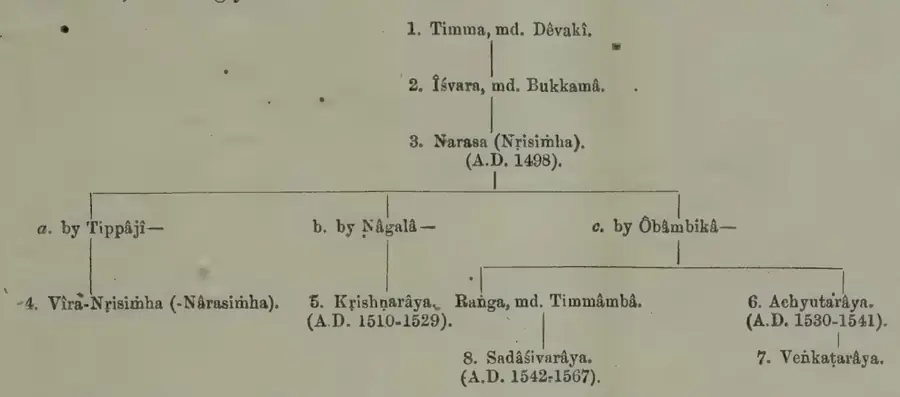
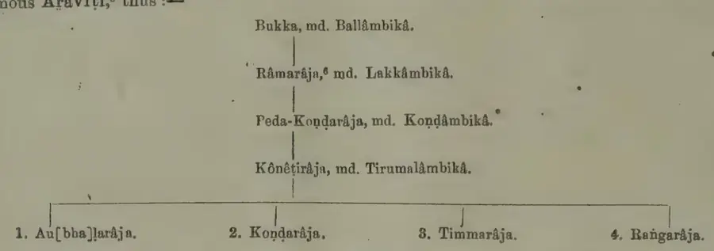

British Museum plates of Śadāśivarāya ; Śaka-Saṅvat 1478
BRITISH MUSEUM PLATES OF SADASIVARAYA;
SAKA-SAMVAT 1478.
BY F. KIELHORN, PH.D., LL.D., C.I.E.; GÖTTINGEN.
THESE plates were obtained by the late Sir Walter Elliot from a Deputy Sheristadar of Chingleput in the Madras Presidency, and they are now in the British Museum. I edit the inscription which they contain from two of Sir W. Elliot's own impressions, one of which was received by Dr. Hultzsch from Dr. Burgess, and the other from Dr. Fleet.
These are seven copper-plates, the first and last of which are engraved on the inner face only, while the others are so on both faces. They are shaped like the Üṇamāñjêri plates of Achyutarâya, of which photo-lithographs have been published above, Vol. III. p. 152 ff., and like those plates, they are numbered, on the first inscribed side1 of each plate, with the Telugu-Kanarese numerals. Each plate is about 67/8" broad and, including the arch at the top, 97/8" high; and the writing runs across the breadth of the plates. The plates have raised rims, and the writing, in consequence, is in an excellent state of preservation throughout. They are held together by a ring, on which is a seal which contains the figure of a boar and representations of the sun and moon.2—The characters are Nandinâgarî, excepting the word śrî-Virûpâksha in line 299, which is in large Kanarese characters; they include the sign for the rough r, in the words mûru, l. 105, Amarûr, l. 212, and Āravîti, l. 242. The size of the letters is between and . The language is Sanskrit, and excepting the words śrî-Gaṇdāhipatayê namah at the beginning and śrî || śrî-Virûpâksha at the end, the whole inscription is in verse. The orthography calls for few remarks. Of the three sibilants, the palatal is nine times employed for the dental, the dental seven times for the palatal and three times for the lingual (in śusyad-, l. 43, ṣaṁsôsya for ṣaṁsôshya, l. 57, and nisphalam, l. 293), and the lingual twice for the palatal (in -darshah, l. 254, and -shôbhî, l. 259). The sign of visarga is occasionally wrongly omitted, three times before the word śrî. A superfluous anusvâra we find in sâṁmrâjya, ll. 81 and 273, kaṁnyâ, l. 244, and tâṁmra, ll. 287 and 290; and the sign of anusvâra has been several times wrongly employed, generally instead of the dental and once instead of the guttural nasal (e.g. in -âdîm nichayan for -âdîn=nîchayan, l. 72, and prâm-nadyâ
1 The fifth plate shows the numeral 5 also on the second side, but it has apparently been struck out.
2 I owe this information to Prof. Bendall.
for prân-nadyâ, l. 194). The sonant aspirate dh, when following upon a vowel, is generally doubled before a semivowel (e.g. in ddhruvañ, l. 69, addhyásya, l. 74, and ddhvâmta, l. 271); on the other hand, dh occurs instead of ddh in iñdhé for iñddhé, ll. 258 and 260, and (incorrectly) in badhvâ for baddhvâ, l. 19. Besides, the word pañkti is spelt panti in pantih, l. 97, and Pañtirathâd, l. 253 (but not in Pañktirathâd, l. 28), and óshadhi vóshadhi, l. 101.—Among the more unusual Sanskrit words offered by our text are añhati, ‘a gift,’ in the biruda Rájarája-sam-áinhati, ‘one whose gifts are like those of Kuvêra,’ l. 104; Asama-kâṇda = Asama-bâna, ‘the god of love,’ l. 102; ahañtâ, ‘conceit,’ l. 121; vîkshâ in the sense of ‘an eye,’ l. 99; Sârasa-nâbha = Padma-nâbha, ‘Vishnu,’ l. 256; suparvan, ‘a god,’ in suparva-tañini = sura-nadâ, l. 261; sauvidalla (wrongly written sauvidarlla), ‘an attendant on the women’s apartments,’ l. 111; spardhâla (wrongly spelt spharddhâla), ‘emulating,’ l. 112; and Smrîti-bhâ, ‘the god of love,’ l. 88. Like the Üṇamâñjêri and other cognate inscriptions, this one also contains the biruda Hiñdurâya-surattrâṇa, ‘the Sultân among Hindû kings,’ l. 107, and the Kanarese birudas Bhâsha(she)ge-tappuva-râyara-gañḍa, ‘the disgracer of kings who break their word,’ l. 102, and Mûru-râyara-gañḍa, ‘the disgracer of the three kings (of the South),’ l. 105. Other birudas, which wholly or partly consist of Kanarese words, are añtembara-gañḍa,1 perhaps for birud-añtembara-gañḍa, ‘the disgracer of those of whom birudas are proclaimed,’ in l. 275, êbirudu-râya-râhuta-vêsy(śy)-aîkabhujañga,2 ‘the unique paramour of the prostitutes—the troopers of kings with what kind of birudas!,’ in l. 277, and vikhyâtabiruda-mani(nni)ya-vibhâla-lîla,3 ‘one whose amusement it is to destroy renowned chieftains,’ in l. 278. The inscription also has the Kanarese tadbhavas râya and mahârâya for râjan and mahârâja; and special attention may be drawn to the occurrence of the term tîru-nakshatra,4 ‘the holy nakshatra,’ in l. 238, perhaps denoting the nakshatra under which the god Vishnu was born. The inscription is remarkable for the large number of village-names in ll. 131-230, the spelling of some of which is not at all uniform.
The inscription is one of Sadâśivarâya or Sadâśivamahârâya of Vijayanagara (or Vidyânagarî, as the name is given in ll. 80-81); and records that the king, in Śaka-Samvat 1478, at the request of Râmarâja, the ruler of the Karnâṭa kingdom (râjjya), who in turn had been requested in this matter by the prince (nripâla) Koñdarâja,—being on the bank of the river Tungabhadrâ, in the presence of the god Vitthalêsvara,—granted many villages to ‘the great sage Râmânuja,’ for the proper worship of the god Vishnu and the support of his devotees. Verses l-42 (up to l. 115) are taken up with the genealogy of the king and give a eulogistic account of himself and some of his ancestors. Then follows what is really one huge sentence, extending as far as verse 149 (in l. 284). This part (in vv. 43-44) gives the date, (in vv. 45-53) describes the nominal donee, Râmânuja, (in vv. 54-116) enumerates the 31 villages granted by the king, and (in vv. 117-124) records the usual conditions under which, and the purpose for which, the grant was made. It then (in vv. 125-133) gives the genealogy of Konðarâja, (in vv. 134-141) states that that prince, wishing the grant to be made, applied to Râmarâja, (in vv. 142-146) eulogizes Râmarâja, and (in vv. 147-149) records that Sadâśivamahârâya at his request made the grant. Verses 150-152 then state that this is an edict (śásana) of the king Sadâśivarâya, and that by his order it was composed by Sabhâpati, and
1 This biruda is often met with in the inscriptions in Epigraphia Carnataca, Part I., sometimes, as given here, in the form antembara-gañḍa, but more commonly in the forms birud-entembara-gañḍa, birud-antembara-gañḍa, birud-andembara-gañḍa, birud-embara-gañḍa; compare, e.g., p. 3, No. 7, l. 4; p. 6, No. 20, l. 9; p. 23, l. 24; p. 40, l. 8; p. 46, l. 16; p. 49, l. 7 from the bottom; etc. I owe the explanation of these terms and of the following to the kindness of the Rev. F. Kittel.
2 Compare Ind. Ant. Vol. XIII. p. 131, plate iva, l. 6; and above, Vol. III. p. 40, note 3.
3 The word manniya see Ind. Ant. Vol. XIII. p. 131, plate iiib, l. 20; and vibhâla, ibid. l. 16; compare also birudas like mânneya-śârdûla, arîrâya-vibhâda, etc.
4 The same term occurs in Ep. Carn. Part I. p. 58, l. 5 from the bottom.
engraved by Víranáchárya, the son of Vírana.1 And the inscription ends with five imprecatory verses (153-157), followed by the words śrí and śrí-Vírúpáksha.
Of the first part of the inscription the verses 1-26, which bring the genealogy of Sadášivaráya down to Achyutaráya, correspond to verses 1-22, 24, 25, 32 and 38 of the Úṇamānjéri plates of Achyutaráya; and the only difference between the two inscriptions so far is this that, while according to verse 14 of Achyutaráya's inscription the lady Ôbámbiká bore to the king Nřisiňha (Narasa) one son, Achyutěndra, according to verse 14 of the present inscription she had two sons, Raňga-kshitíndra and Achyutadévaráya. The inscription (in vv. 27-30) then tells us that, on Achyutěndra's death, his son Veňkataráya or Veňkatadévaráya ascended the throne, and that, when after a short time he too had died, the king (kshínápati) Ráma, the ruler of the great Karnáta kingdom (rájya) and 'husband of (Sadášiva's) sister,' made the ministers install Sadášiva-maháráya, the son of Raňga-kshitíndra and Tímmámbá, on the throne of Vidyánagari.2 The verses which follow, up to v. 42, eulogize Sadášiva in the usual hyperbolical fashion. What may perhaps be mentioned here, is, that in v. 34 the dust raised by his armies is described as smoke that drove away those gnats—the Šakas (i.e., here, the Muḥammadans), and that v. 41 speaks of the Kámbhója (!), Bhója, Káliňga and Karaháta kings as attendants on his women's apartments.3 The genealogy of the donor, furnished by this record, accordingly is this4:—

The king Ráma, spoken of in the preceding, is mentioned again in vv. 141-147. He is there eulogized as the hero, the glorious Rámarája, the instructor in establishing the glory of the great Karnáta kingdom (rájya), the fruit of long-continued meritorious works (i.e. the son) of the glorious king (bhúpála) Raňgarája, the garland of the Sóma vaňša, the jewel that
1 The Úṇamānjéri plates profess to be engraved by Víranáchárya, the son of Mallana.
2 The same account is given in a copper-plate inscription of Sadášiva's of Šaka-Saňvat 1482 [current], described in Mr. Sewell's Lists of Antiquities, Vol. II. p. 12, No. 81.
3 This, of course, is merely an exaggerated reproduction of the verse in the inscriptions of Křishnaráya and Achyutaráya which makes these kings be waited upon by the kings of Ánga, Vaňga, and Kaliňga.
4 As regards the dates of these princes, known to me from their own published inscriptions, the earliest date of Křishnaráya (Ep. Ind. Vol. I. p. 366) would correspond to either the 23rd or the 24th January, A.D. 1510, and his latest date (ibid. p. 399) is Monday, the 23rd April, A.D. 1529. The earliest date of Achyutaráya (Ind. Ant. Vol. IV. p. 329) is Monday, the 15th August, A.D. 1530, and his latest date (Ep. Carn. Part I. p. 176, No. 120) would correspond to the 25th January, A.D. 1541. The earliest date of Sadášivaráya (ibid. p. 34, No. 42) would correspond to the 27th July, A.D. 1542, and his latest date (South-Ind. Inscr. Vol. I. p. 70) is Wednesday, the 5th February, A.D. 1567. Regarding Narasa (Nřisiňha) and Víra-Nřisiňha I can only say that the only date known to me, which admits of verification, is one of Narasa's reign, corresponding to the 13th December, A.D. 1498 (Ep. Carn. Part I. p. 180, l. 16). Compare also South-Ind. Inscr. Vol. I. pp. 131-132.
ornaments the Âtrêya gôtra, a king Bhôja1 in exercising imperial sway over the sentiments of poetry. (sâhitya-rasa), etc.; and is by some of these epithets shown to be Râma II. of the third Vijayanagara dynasty.2 The statement of our inscription that he was the husband of Sadâśivarâya's sister (bhaginî), need not, I think, be taken in its literal sense. In an inscription published in the Epigraphia Carnataca,3 Râma is distinctly called Krishna's (i.e. Krishnarâya's) daughter's husband (jâmâtâ), and the two statements would in my opinion be best reconciled by taking the word bhaginî of the present inscription to denote a cousin of Sadâśiva's, the daughter of his paternal uncle Krishnarâya.4
From the account of the third Vijayanagara dynasty, given above, Vol. III. p. 238, it will be seen that Ranga I., the father of Râma II. (our Râmarâja), was a son of Râma I. and his wife Lakâ or Lakkâ, and grandson of Bukka and his wife Ballâ or Ballamâ, and that, in the inscription there treated of, Bukka's father Pinnama II. is styled "the lord of the city of Âraviti." Taken together with that account, our inscription in vv. 125-140 clearly shows that the prince (nripâla) Kondarâja, at whose solicitation Râmarâja requested Sadâśiva to make this grant, was a near relation of Râmarâja's. For Kondarâja is here described as the second of four brothers who also were descended from the king (kshamâpa) Bukka of the famous Âraviti,5 thus:—

Kondarâja, therefore, was a grandson of (Peda-Kondarâja, who was) a brother of (our) Râmarâja's father Ranga I. He apparently is the same person who, in an inscription7 of the reign of Sadâśiva, which is dated (one month earlier than the present inscription) at the time of a solar eclipse, on Monday, the new-moon day of Kârttika of Śaka-Samvat 1478 (=Monday, the 2nd November, A.D. 1556), is styled "the Mahâmandalésvara Komâra Kondarâjayyadêva, the great king (mahâ-arasu)."
Our inscription is dated (in vv. 43-44) in the Śaka year counted by the Vasus (8), the horses (7), the oceans (4) and the moon (1), in the year Nala, at the time of an eclipse of the sun on the new-moon tithi of the month Mârgaśirsha, on a Sunday. By the southern luni-solar system the year Nala (Anala) does correspond to Śaka-Samvat 1478.
1 From this epithet it is clear that Râmarâja was a poet or at least a patron of poets.
2 See Dr. Hultzsch in Ind. Ant. Vol. XIII. pp. 154-155, and Mr. Krishna Sastri, above, Vol. III. p. 238.
3 Ep. Carn. Part I. p. 216, l. 1; see also Mr. Sewell's Lists of Antiquities, Vol. II. p. 250.
4 On the very loose way in which words denoting relationship are used in the Kanarese country, see Dr. Fleet's Kanarese Dynasties, p. 48, note 1. My reason for attaching, in this particular point, rather greater value to the inscription in the Epigraphia Carnataca is, that in the historical account furnished by that inscription the exact relationship between Râmarâja and Krishnarâya is a matter of some importance, and therefore likely to have been described correctly.
5 This name is written Âriviti, Ep. Carn. Part I. p. 19, No. 12, and Aruviti, ibid. p. 212, No. 181.
6 The writer, in l. 244, has omitted the two aksharas Râma, but there can be no doubt about the intended reading.
7 ibid. p. 174, No. 108. Kondarâja (the mahâ-arasu) is also mentioned in two short Bâdâmi inscriptions of Sadâśiva's of the year Šôbhakrit (Śaka-Samvat 1465); Ind. Ant. Vol. X. p. 64.
expired, but otherwise the date is quite incorrect. For the new-moon tithi of the amânta Mârgaśīrsha of Śaka-Samvat 1478 expired occupied about the whole of the 1st December, A.D. 1556, which was a Tuesday, not a Sunday, and on which there was no eclipse. There was a solar eclipse, which was visible in Southern India, 6 h. 15 m. after mean sunrise of Monday, the 2nd November, A.D. 1556, the new-moon day of the amânta Kârttika of Śaka-Samvat 1478 expired, and that eclipse is correctly quoted in the inscription of Sadâśiva's reign which has been mentioned in the preceding paragraph.
According to vv. 45-53 the grant recorded in our inscription was made 'to him who has become the best of instructors in inaugurating the path of the Vêda; who knows the Dramiđa doctrine1 which is the essence of the rays of light of such Vêda; who is the foremost instructor in establishing the tenets of the six daršanas; who breaks the pride of mind of those who maintain (the doctrine of) illusion;2 who has conquered disputants; who takes away the conceit of crowds of those most learned in magical formulas; who is termed a Garuđa of the dissolute (?), while he protects those come for refuge; who repeatedly has sanctified the earth by his circumambulations, and whose mind is quite spotless from his bathing at various holy places; whose birth was reverenced by Sanaka3 and crowds of other great contemplative saints; whose mind's eye is busy in discerning the course of the past, present and future; whose fame deserves to be proclaimed before that of Prahlâda, Nârada, Vyâsa, Parâšara, Śuka and other great devotees of the Holy one; who always is full of bliss, whose mind (?) is given to truth, who gladdens the circle of the good, and who is thus another form of Lakshmî's husband who was always approached by (his foster-father) Nanda, whose heart (?) is devoted to (his wife) Satyabhâmâ, and who possesses a discus and (his sword) Nandaka; whose soul is ever engaged in meditating on the footsteps of Nârâyaṇa; who, in order that he may worship Âdikêšava (Vishṇu), has assumed the form of an image4 in the sacred place, the excellent town named Pirumpûndûru;5 to him who also is called the holy Amperumâl,6 to the great sage Râmânuja, ever mindful to propitiate Râma.'
Below, in vv. 117-119, it is again stated that the villages granted by the king were to be enjoyed (or possessed), free from all taxes, etc., and as long as the moon and the stars endure, by the great sage Râmânuja. As the great reformer Râmânuja lived about 500 years before Sadâśivarâya, the meaning of this can only be, that the donation was made in favour of the sect founded by Râmânuja, or more particularly, of those of its members who were settled at the sage's birth-place, Śrîperumbûdûr, or of the Vaishṇava temple which contained the image of Râmânuja, before alluded to. At any rate, the object of the grant (according to vv. 120-124) was, to enable the devotees to carry on the regular and incidental worship of Ananta (Vishṇu) with incense, lights, oblations of food, flowers, dancing, singing, music, umbrellas, châmaras, etc.; to celebrate in proper style the yearly festival of Vishṇu on 'the holy
1 Dravida-vêda and Dravid-âmnâya are in Mr. Kittel's Kannađa-English Dictionary explained to mean 'a Vaishnava popular exposition of the Vêdas in Tamiľ verse.' Drâvid-âmnâya I find in Ep. Carn. Part I. p. 45, l. 10 from the bottom, and p. 46, l. 14 from the bottom. Compare also Sir M. Monier-Williams's Brâhmaṇism and Hindûism, p. 125.—[The Dravida-vêda is identical with the collection of Tamiľ hymns generally called Nâlâyira-prabandham.—E. H.]
2 Dr. Bhandarkar, in his Report for 1883-84, p. 74, says: 'It was, therefore, Râmânuja's endeavour to put down the pernicious doctrine of Mâyâ or unreality, and seek a Vedântic and philosophic basis for the religion of Bhakti or Love and Faith that had existed from time immemorial.'
3 This is the name of a Rishi who was considered to be a son of Brahman.
4 See Dr. Buchanan's Journey through Mysore, Vol. III. p. 468, where an image of Râmânuja in a temple at Śrîperumbûdûr is spoken of.
5 Below, the name of this place is spelt Perumbûdûru.
6 Compare the name Emberumânâr, translated by 'Râmânuja,' in Ep. Carn. Part I. p. 58, No. 94, l. 5 from the bottom.—[Emberumânâr, i.e. 'our lord,' is the name under which Râmânuja is generally referred to by the Vaishṇavas.—E. H.]
nakshatra,1 as well as the yearly car-festival; and every day to provide food of all kinds for the Vaishnava twice-born and their wives, children and aged people, at 'the extensive hall of the holy Rāmānuja here constructed.'2
For these purposes, then, the king granted thirty-one villages which are enumerated, and the exact position of which is specified, in vv. 54-116 (lines 131-230). Verse 54 shows that all were in the Chandragiri rājya of the Jayankonḍa-Chôla maṇdala.3
Sixteen villages belonged to the Māhalūr nāḍuka of the Šēnkāttu kôṭaka;4 they were:—
1-5 (vv. 55-59). The villages Kachchipattu, Perumbūdūru, Kilepattu, Kuśapattu, and Pūtēri, all in the Kachchipattu sīmā,5 and situated east of Pātichchēri and Vaṭamaṅgala, south of Malepattu and Śrīperumbūdūru,6 west of the Brāhmaṇa (?) tank of the village Venkāttu, and north of Pôlūr, Iruṅgola and Māmpāka.—Śrīperumbūdūr is in the Conjeeveram tálukâ7 of the Chingleput district, lat. 12° 58' N., long. 80° E. About 2½ miles west of it the map shows Padicheri [Pādichchēri] and Vaṭamaṅgalam; about 3 miles east-south-east of it Venkāđu, with a large tank to the north of it; about 4 miles south-west of it Māmbākkam; and about 2 miles south-west of it Iruṅkulam.
6 (vv. 60-62). The village Achchamperumpêṭa(đu), east of Valletāñchēri and Tattanūruvilāha, south of Kuṇdimperumpêṭi(đu), west of Ūranēri and Nallānperuntēri, and north of Periñchipākakuppa and Maṭañchēri.—The map shows no name corresponding to Achchamperumpêṭa(đu); but from 4 to 5½ miles south by east of Śrīperumbūdūr we find Tattanūr, Valatāñchēri, Kuṇduperumbūđu, Nallāmperumbūđu, and Periñjempākkam.
7 (vv. 63-64). The village Pudra(du?)chchēri, east of Sômāmaṅgala, south of Mēlahara, west of Nađupattu, and north of Maṇimaṅgal[a] and Koṭtakāla.—The map has Puducheri [Puduchchēri] 7 miles east and slightly south of, and Maṇimaṅgalam about 7 miles south-east of Śrīperumbūdūr; close to Puducheri on the west it has Sômaṅgalam(!), and on the east Nađuvirappattu (Nađupattu).
1 According to Mr. Krishna Sastri, the Vaishnavas generally understand by tiru-nakshatra the nakshatra under which Rāmānuja was born. His birth is believed to have taken place under the nakshatra Tiruvādirai (Ārdrā in Sanskrit); compare Ind. Ant. Vol. XXIII. p. 121, No. 51.—[A recent instance of the use of tirunakshatra is supplied by the subjoined 'notice' of the publishers of the Bangalore Sanskrit journal Mānasôllāsini:—"Our readers are requested to excuse us for not having published the issue of the last Monday, the 29th April 1895, on account of the absence of our compositors and others for Rāmānujāchār's Tirunakshatram."—E.H.]
2 I take Rāmānuja-kūṭa to be equivalent to Rāmānuja-maṇdapa, and believe that the building referred to is the one described by Dr. Buchanan in his account of Śrīperumbūdūr (Journey through Mysore, Vol. III. p. 468), thus: 'Near this is the spot where the great man (Rāmānuja) was born. A stone chamber has been erected over it; and between this and the temple is one of the finest Mandapas, or porticos, that I have seen erected by Hindus. It is of great size, and supported by many columns; but, as usual, it is neglected, and has become ruinous and dirty.'—Rāmānuja-kūṭa also occurs in Ep. Carn. Part I. p. 57, l. 16.
3 On the Jayankonda-Chôla maṇdala see above, Vol. III. p. 149. The Chandragiri rājya apparently was so called after the town Chavdragiri in the Chandragiri tálukâ of the North Arcot district; see ibid. p. 119.
4 The place Māhalūr, after which the nāḍuka is named, I cannot identify; Šēnkāttu is the genitive of Šēngāđu, a village about 5 miles north by west of Śrīperumbūdūr.—In order to save repetition, I shall give here at once the names of the villages contained in the Map of the Chingleput and Madras Districts, which appear to correspond to the names given by the inscription. For places which are not in the Chingleput district (the villages 30 and 31, and their boundaries) the necessary information has been kindly added by Dr. Hultzsch, who also has revised the spelling of the names of places in the Chingleput district on the basis of the official English and Tamil lists of the villages in each tálukâ.—I must express here my respectful thanks to the authorities of the India Office for the readiness with which they have placed at my disposal a copy of the Map of the Chingleput and Madras Districts, to enable me to edit this inscription.
5 This apparently refers to the five first villages only.
6 As Perumbūdūr itself is one of the villages granted, I do not understand what the author means by this.—[Perumbūdūr may have formed a hamlet of Śrīperumbūdūr, which was excluded from the grant.—E. H.]
7 The same remark holds good of all the villages enumerated under 1-15, and perhaps also of those under 16.
8 (vv. 65-66). The village Pāñchálippattū, east of Kotṭapāka, south of Pre(pe?)-rumanittāngal, west of Penna(nne?)lūru, and north of Kileppattū and Śriperumbūdūru.— Here the map only shows Bīmantāngal (Perumanittāngal ?) about 1½ mile north-east, and Peñnalūr about 2½ miles east and slightly north of Śrīperumbūdūr.
9 (vv. 67-68). The village Nelmali, east of Kotċāđa and Āyakkulattūru, south of Mañnūr and Vaṭapura, west of Kāranattāngal and Inuñkātakōṭa, and north of Kotṭapāđa.— The map has Nemmali (Nelmali) about 2½ miles north and slightly east of Śrīperumbūdūr; and around it, on the north Mañnūr and Valarpuram (Vaṭapura), on the west Tođukkāđu (=Kotċāđa ?) and Āyakolattūr, on the south Kārantāngal, and on the east Iruñkātṭukōtṭai (Inuñkātakōṭa).
10 (vv. 69-70). The village Pau(pō?)ndūru, east of Mâ[m]pāka, south of Kašchi(chchi)patṭu, west of Pullapāka, and north of Vaṭakāl and Pa(?)đuhappatṭu.— Pōndūr is about 3 miles south and slightly west of Śrīperumbūdūr; west of Pōndūr is Mâmbâkkam, north-east of it Pillapâkkam (Pullapāka), and south of it Vađakāl.
11 (vv. 71-72). The village Nagarikuppa, east of Kileppattū, south of Pennelūru, west of Veñkātū, and north of a small river, flowing into a tank or lake, and of Veñkātū.— The map shows no name like Nagarikuppa, but it has Peñnalūr and Veñkāđu (which have been already mentioned) about 3 miles east of Śrīperumbūdūr.
12 (vv. 73-74). The village Ku[n]dipperumpēđu, east of Kannittāngal and Tattanūru, south of Kotṭañkārana, west of Mângâni, and north of the lake of (?) Achchaperumpēđu.— Kunđipperumpēđu is Kunđuperumbēđu, about 4 miles south by east of Śrīperumbūdūr. To the west of it the map has Kañnantāngal and Tattanūr, to the north Otṭañkāranai (Kotṭañkārana ?), and to the east Mâgâniyam (Mângâni). About 2 miles south of it we find (not Achchaperumpēđu, but) Nallâmperumbēđu, mentioned already above.
13 (vv. 75-76). The village Tirumañikkuppa, east of Kôtṭūri, south of Pandūr and (?) Mummađikkuppa, west of Aharittirumañi, and north of Yakkantāngal.— Tirumañikuppam is about 3½ miles west of Śrīperumbūdūr. About one mile north-west of it the map shows Mummađikuppam, and 2½ miles also north-west of it Kôtṭayūr (Kôtṭūri ?); and close to Tirumañikuppam on the east is Agaram (Aharittirumañi ?).1 The map contains no name like Yakkantāngal.
14 (v. 77). The village Mulaśūru, east of Bêlūr and (?) Nandimēđu, south of Pandūru, and west and north of Tirumañgala.— Mulaśūru is Molaśūr, about 5 miles south-west of Śrīperumbūdūr. To the north of it is Tiruppandiyūr (apparently Pandūru), to the south-west Nandimēđu, and to the south-east Tirumañgalam.
15 (vv. 78-79). The village Ettantāngal, east of Tirumañikkupa, south of Tirumanyahara, west of Vađamañgala, and north of Pandūru.— Ettantāngal ought to be looked for about 3½ miles west of Śrīperumbūdūr, but the map shows no name like it. Tirumañikkuppa, Vađamañgala and Pandūru have been mentioned before. Judging from the position of these places, I incline to think that Tirumanyahara is the same village which above is called Aharittirumañi, and that it is represented by the village Agaram of the map, east of Tirumañikuppam.
16 (vv. 80-81). The village Pandūr, east of Šôlingapura, south of Vellâtūr, west of Amanêri, and north of Pândenallūru.— These villages I am unable to identify on the map. There is a place named Velattūr about 13 miles west of Śrīperumbūdūr, but none of the other villages are anywhere near it.
1 See below, under 15.
• The two next villages were in the Šarattur náđuka of the Puliyúr kótaka1:—
17 (vv. 82-83). The village Pambaļi, east of Ānekkoţtaputtúru, south of Kuļachchalúru, west of Malettaņi and (?) Varáttúru, and north of Pirunganallúru.— Pambaļi must be the village Pammal, about 12 miles east of Šríperumbúdúr, in the Saidápêt tálukâ of the Chingleput district, lat. 12° 58 1/2' N., long. 80° 11 1/2' E. Close to it on the north-west the map shows Āņakáputtúr (Ānekkoţtaputtúru), and about 2 miles north and slightly east of it Polichallur [Poļichchalúr] (probably Kuļachchalúru).
18 (vv. 84-85). The village Šemmeņpáka, also called (?) Aruntanallúr, east of Kílpáka, south of Pichchamšéri, west of a big hill near Nammaňgaļa, and north of Šittileppáka.— This is Šembákkam, also in the Saidápêt tálukâ, lat. 12° 56' N., long. 80° 13' E., about 14 miles east by south of Šríperumbúdúr. The map shows Rájakílpákkam south-south-west of it, Šittálapákkam nearly north-west (not south) and Naņmaňgalam north-east of it, with a hill or mountain south of Naņmaňgalam.
The next village was in the Vellenalluru náđu of the Poļili kótaka2:—
19 (vv. 86-88). The village Āyalchéri, east of the field of Likuta at Vayalánallúr, south of the bank of a small river flowing into (?) the river of Vayalánallúr, west of Kannapillepálaya and north of Vayalánallúr.— Āyalchéri also is in the Saidápêt tálukâ, lat. 13° 5 3/4' N., long. 80° 8 1/2' E., about 12 1/2 miles north-east of Šríperumbúdúr. It is quite close to and south of the 'Cooum' river, and the map shows about one mile south-west of it Váyilánallúr, and 1 1/2 mile east of it Kaņnapálaiyam.
The two next villages were in the Kákalúr náđuka of the Īkkátu kótaka3:—
20 (vv. 89-91). The village Āyattúr, east of Ataňchánkuppa, south of Surakulattúru, west of a small river flowing into (?) the tank of the village Páka, and north of Turúru and (?) Kandaňkolla.— Ayattúr (Āyattúr) is in the Tiruvallúr tálukâ of the Chingleput district, lat. 13° 8 1/2' N., long. 80° 3' E., about 12 miles north by east of Šríperumbúdúr. To the north of it the map shows Širukalattúr, and to the north-east Pákkam; and south-west of it are Kandigai (Kandaňkolla ?) and, about 1 1/2 mile distant from it, Tolúr (Turúru ?).
21 (vv. 92-93). The village Nelmalyahara, east of Kílaviláha, south of a small river flowing into the tank of Páđúr, west of a kuppa (? 'a hill' or 'a hamlet') on the bank of the river north of Viđayúru, and north of the river east of (?) Viđayúru, and of a Rudra temple.— Nelmalyahara is Nemmiliagaram, also in the Tiruvallúr tálukâ, lat. 13° 7' N., long. 79° 53 1/2' E., about 13 miles north-west of Šríperumbúdúr. According to the map it is situated on the eastern bank of the 'Kusastala' river, and close to it are, on the north, Kílavilágam (Kílaviláha), and on the south, Viđaiyúr (Viđayúru).
The next village was in the Kachehúru4 náđuka of the Puļili kótaka:—
22 (vv. 94-95). The village Nađuppaţtu, east of Šotipperumpėdu, south of the river Kórasthaléru and of a great forest, west of Nāyeru, and north of Pūđur.— Nađuppaţtu apparently is the village Šūrappaţtu of the map, in the Poņnėri tálukâ of the Chingleput district, lat. 13° 15' N., long. 80° 15' E., about 25 miles north-east of Šríperumbúdúr. It is about 2 miles
1 Šarattur I cannot identify. The Puliyúr kótaka apparently was so called after Puliyúr, which is close to Madras in the Saidápêt tálukâ of the Chingleput district, lat. 13° 3 1/4' N., long. 80° 17' E.
2 The place after which the kótaka was called, Poļili or, as it is spelt below, Puļili and Puļali, is the village of Poļal near Madras on the road to Nellore. Vellenalluru is perhaps only another form of Vayalánallúr, which will be mentioned presently.
3 The places after which the náđuka and kótaka were called are the Kákkalúr and Īkkádu of the map, both close to each other in the Tiruvallúr tálukâ of the Chingleput district, about 12 or 13 miles north by west of Šríperumbúdúr.
4 This place I cannot identify.
south of the 'Kusastala' river, and to the west of it the map shows Šôttuperumbêdu, to the south Bûdûr (Pûdur), and to the east Nâyar (Nâyeru1).
The four next villages were in the Nâyattu2 nâduka of the Pulâli kôtaka :—
23 (vv. 96-97). The village Vałuya(dha?)lammêdu,3 east of Nâyara, west of Muđiyûr, and north of Šêrumulla.— Vałuya(dha)lammêdu is the Vałudalambêdu of the map, also in the Poñnêri tâlukâ, lat. 13° 15 1/2' N., long. 80° 17' E., about 28 miles north-east of Šrîperumbûdûr. According to the map it is about one mile south of the 'Kusastala' river, one mile east of Nâyar (Nâyara), and one mile west of Mađiyûr (Muđiyûr).
24 (vv. 98-99). The village Sirupâka, east of Mâlipâka and Âmûrukuppa, south of Ilavampatțu, west of Vanippâka4 and (?) Achchirumuha, and north of Nâyeru.— Sirupâka is the Šiřuvâkkam of the map, also in the Poñnêri tâlukâ, lat. 13° 17' N., long. 80° 16' E., about 28 miles distant from Šrîperumbûdûr towards the north-east. It is on the northern bank of the 'Kusastala' river, and the map shows to the west of it Mânivâkkam (Mâlipâka) and Âmûr, towards the north-east Elavampêdu, and towards the south-east Vanñippâkkam. About 2 miles south of it and south of the 'Kusastala' river is Nâyar (Nâyeru).
25 (vv. 100-101). The village Eluvittângal, east of Vannippâka, south of Nâlûr and Muriyađichchânpatțu, west of Panappâka and north of Pûdûrvilâha.— Eluvittângal I cannot identify, but it must have been in the neighbourhood and east of Sirupâka; for the map shows Vanñippâkkam one mile south-east of Širuvâkkam, and Murichampêdu (Muriyađichchânpatțu) 1 1/2 mile north-east and Nâlûr about 2 1/2 miles east of it. [In the Index to the Poñnêri tâlukâ map, the villages Nâlûr, Inivittângal and Pañappâkkam are clubbed together].
26 (vv. 102-103). The village Pûdêrivilâha, east of Nâyaru, south of Sirupâka, west of a lake near the boundary of Vełudhalammêdu, and north of Nâyaru.— This village also (apparently the same which above is called Pûdûrvilâha) I do not find on the map; but its position is indicated by the three other villages which have been already mentioned and identified.
The two next villages were in the Amarûr nâduka of the Peyyûru kôtaka5 :—
27 (vv. 104-105). The village Kîraippâka, east and south of Ummippatțu, west of Peruinkali, and north of Kôlûra.— Kîraippâka probably is the village Kîrappâkkam of the map, also in the Poñnêri tâlukâ, lat. 13° 28 1/2' N., long. 80° 16' E., about 39 miles north by east of Šrîperumbûdûr. About 2 miles south-west of it the map has Ummippêdu (Ummippatțu), and 3 miles south-east of it Kôlûr.
28 (vv. 106-107). The village Šettuppâdu, east of Kârana and (?) the tank of Pâpasetți, south of a big forest near that tank, west of the road of Mâđanallûra, and north of Kârana and Kottapâlaya.— These I cannot identify.
The next village was in the Kachchûru6 nâduka of the Îkâțtu kôtaka :—
29 (vv. 108-110). The village Sômidêvapatțu, east of Udappi, south of Kuñjara and Mailâppûr, west of Payyûru and (?) Gollakuppa, and north of Kurakkuntanđala.— Sômidêvapatțu is the village Sômadêvampatțu of the map, in the Tiruval!lûr tâlukâ of the Chingleput district, lat. 13° 14' N., long. 79° 58' E., about 18 miles north by west of Šrîperumbûdûr. To the north of it the map shows Kuñjaram and Mailâpûr, to the south-west Odappai (Udappi), to the south-east Kořakantanđalam (Kurakkuntanđala), and to the north-east Meyyûr (Payyûru?).
1 The name of this place is spelt below also Nâyaru and Nâyara.
2 This nâduka is evidently named after Nâyaru; see the preceding note.
3 See below, under 26.
4 Below, this name is spelt Vannippâka.
5 'Peiyur Kottam' is mentioned in the Chingleput Manual, p. 438, as belonging to the Poñnêri tâlukâ.
6 This nâduka is distinct from another of the same name in the Pulîli kôtaka; see above under 22.
The last two villages were in the Malaya1 nāđuka of the Îkâttu kótaka :—
30 (vv. 111-113). The village Vellâttukóta, east of the temple of (the goddess) Malaya-Ná[ch]chi[yár] at Allikuli, south of the tank of Vijânkâđu, west of the garden of Timma at Nelvádi, and north of Kottûr and (?) Ariyapáka.—‘Vellattukota’ is found on the map of the Kálahasti Zamíndárî, to the west of ‘Neluay’ (Nelvádi). Its western boundary, Allikuli, belongs to the Tiruvallûr táluká.
31 (vv. 114-116). The village Kôlpáka, east of the Allikuđi mountain and (?) of the tank of Pennelûru, south of the Chandramauli tank, west of Amanpáka and of the road to the village Pennallûru, and north of the tank of Chêlekâtu.—Allikuđi is the same as Allikuli, the western boundary of the village No. 30. The Kálahasti Zamíndárî map shows, to the east of Allikuli, ‘Ammambakam’ (Amanpáka), and to the north-north-west of the latter a very indistinctly printed name which may be meant for ‘Pernallur’ (Pennelûru or Pennallûru).
As the chief interest of this inscription will probably be considered to lie in the unusually large number of districts and places mentioned in it, I conclude this abstract of the contents with the following alphabetical list of the kótakas, nāđukas, and villages and other localities, the names of which occur in lines 131-230. The figures after the names refer to the lines of the
original text.
(a) List of kótakas :—
Îkkâttu-k. 188, 218, 222.
Pulali-k. 199 ; Pulili-k. 195 ; Polili-k. 183.
Puliyûr-k. 176.
(b) List of nâdukas :—
Amarûr-n. 212.
Kachchûru-n., in Îkâttu-k. 219 ; in Pulili-k. 196.
Kâkalûr-n. 188.
Nâyattu-n. 199.
(c) List of villages, etc. :—
● Achchaperumpêdu 162 ; Achchamperum-pêta(du) 143.
Achchirumuha 203.
Atañchânkuppa 189.
Amanêri 174.
Amanpâka 229.
Ariyapâka 225.
Aruntanallûr 181.
Allikudi mountain 227 ; Allikuli 223.
Aharittirumani 164.
Ânekkoțtaputtûru 176.
Âmûrukuppa 202.
Âyakkulattûru 151.
Âyattûr 191.
Âyalchêri 187.
Inuñkâtakôta 153.
Iruîngola 136.
Ilavampatțu 203.
Udappi 219.
Ummippatțu 213.
Peyyûru-k. 212.
Šênkâttu-k. 132.
Malaya-n. 223.
Mâhalûr-n. 133.
Vellenalluru-n. 183.
Şarattur-n. 175.
Üranêri 142.
Ettantângal 171.
Eluvittângal 209.
Kachchipattu 137, 154 ; -sîmâ 133.
Kandaîkolla 191.
Kannapillepâlaya 185.
Kannittângal 160.
Kârana 215, 217.
Kârapattângal 153.
Kîraippâka 214.
Kîlavilâha 192.
Kîlepattu 138 ; °ppattu 149, 157.
Kîlpâka 179.
Kuñjara 219.
Ku[n]dipperumpêdu 162 ; Kuñdim-perumpêti(đn) 141.
Kurakkuntandala 221.
Kulachchalûru 177.
Kuşapattu 139.
Kotkâda 151.
1 The name of this nđđuka, which means 'the hill-division,' may be connected with that of the temple of Malaya-Náchchiyâr which belonged to it.
(c) List of villages, etc.—contd.
| Kotṭakāla 146. | |
| Kotṭankāraṇa 161. | |
| Kotṭapāka 147. | |
| Kotṭapāda 153. | |
| Kotṭūr 225. | |
| Kōtṭūri 163. | |
| Kottapālaya 217. | |
| Kōrasthalēru river 197. | |
| Kōlūra 214. | |
| Kōlpāka 230. | |
| Gollakuppa 220. | |
| Chandramauli tank 228. | |
| Chēlekātu 229. | |
| Tattanūru 160. | |
| Tattanūruvilāha 140. | |
| Tirumaṅgala 167. | |
| Tirumaṇikkuppa 166, 169. | |
| Tirumaṇyahara 169. | |
| Turūru 191. | |
| Nagarikuppa 160. | |
| Nađupatṭtu 145; Nađuppatṭtu 199. | |
| Nandimēdu 167. | |
| Nammaṅgala 180. | |
| Nallānperuntēri 142. | |
| Nāyara 200; Nāyaru 209, 211; Nāyer 198, 204. | |
| Nālūr 206. | |
| Nelmali 154. | |
| Nelmalyahara 195. | |
| Nelvādi 224. | |
| Pa(?)đuhappatṭtu 156. | |
| Panappāka 207. | |
| Pandū[r] 175. | |
| Pandūr 163. | |
| Pandūru 167, 171. | |
| Pambali 179. | |
| Payyūru 220. | |
| Pāka 190. | |
| Pāñchālippatṭtu 151. | |
| Pāṭichchēri 134. | |
| Pāṇdenallūru 175. | |
| Pāđūr 193. | |
| Pāpasetṭti tank 215. | |
| Pichchamśēri 179. | |
| Piruṅganallūru 178. | |
| Pudra(du?)chchēri 146. | |
| Pullapāka 155. | |
| Pūđur 198. | |
| Pūtēri 139. | |
| Pūdūrvilāha 208. | |
| Pūdērivilāha 211. |
Pennalûru 149; Pennallûru 229; Periûru 157, 227.
Periñchipâkakuppa 143.
Perunkalî 213.
Perumbûdûru 137, 150; Šrîp° 135, 150.
Pôlûr 136.
Pau(pô?)ndûru 156.
Pre(pe?)rumanittângal 148.
Bêlûr 166.
Maťañchêri 143.
Mañimañgal[a] 146.
Mannûr 152.
Malettañi 178.
Malepatțtu 134.
Mângâni 162.
Mâdanallûra 216.
Mâmpâka 136, 154.
Mâlipâka 202.
Muđiyûru 200.
Mummađikkuppa 164.
Muriyađicňchânpatțtu 206.
Mułaśûru 168.
Mêlahara 144.
Mrai(mai)lâppûru(r) 220.
Yakkantângal 165.
Vaťakâl 155.
Vatapura 152.
Vaťamañgala 134; Vađa° 170.
Vanippâka 203; Vannippâka 205.
Vayalânallûr 184, 185, 186.
Varâttûru 178.
Vallettâñchêri 140.
Vałuya(dha?)lammêđu 201; Vełudh lammêta(đu) 210.
Viđayûr, Viđayûru 194.
Vilâńkâđu 224.
Veňkâtu 135, 158, 159.
Vellâțûr 173.
Vellâțtukôta 226.
Šittileppâka 181.
Šettuppâđu 217.
Šemmenpâka 182.
Šêrumulla 200.
Šôtipperumpêđu 196.
Šôlingapura 172.
Sirupâka 205, 210.
Surakułattûru 189.
Sômamañgala 144.
Sômidêvapatțtu 221.
TEXT.1
First Plate.
1 Śrī-Gaṇādhipatayê namah |(II) 2Namas=tuinga-śiraś-chumbi-chaṁdra-châmara-
2 châravê | trailôkya-nagar-ârambha-mûlastaṁbhâya Śambhavê |(II) [1*] Hqrêr=lí-
3 lâ-varâhasya daṁshtrâ-daṁdah sa pâtu vah | Hêmâdri-kalaśâ yatra
4 dhâtrî chchha[t*]tra-śriyaṁ dadhau |(II) [2*] Kalyânây=âstu tad=dhâma pratyûha-ti-
5 mir-âpahaṁ | yad=Gajô=py=Agaj-ôdbhûtaṁ Hariṇ=âpi cha pûjyatê |(II) [3*]
6 Asti kshîramayâd=dai(dê)vair=mathyamânân=mahâmbudhêh | navanî-
7 tam=iv=ôdbhûtam=apanîta-tamô mahah |(II) [4*] 3Tasy=âsît=tanayas=tapô-
8 bhir=atulair=anvartha-nâmâ Budhah |4 puṇyair=asya Purûravâ bhuja-ba-
9 lair=âyur=dvishâm nighnatah | tasy=Âyur=Nahushô=sya tasya pu(pa)rushô
10 yuddhê Yayâti[h*] kshitau |4 khyâtas=tasya tu Turvasur=Vasu-nibhah śrī-Dê-
11 vayânî-patêh |(II) [5*] 6Tad-vamśê Dêvakî-jânir=didipê Timma-bhûpatih | ya-
12 śasvî(svî) Tuļuv-êmdrêshu Yadôh Krishna iv=ânvayê |(II) [6*] Tatô=bhûd=
Bukkamâ-jânir=Î-
13 śvara-kshitipâlakah | atrâsam=aguṇabhramśam mauli-ratnam mahîbhujâm |(II 7*]
14 Sarasâd=udabhû[t=*] tâsmâ[n=*] Naras-âvanipâlakah | Dêvakî-naṁdanât=Kâ-
15 mô Dêvakî-naṁdanâd=iva |(II) [8*] 6Vividha-sukrit-ôddâmê Râmêśvara-pramu-
16 khê muhur=mudita-hriday. sthânê sthânê vyadhatta yathâvidhi |[*] budha-pari-
17 vritô nânâ-dânâni yô bhuvi shôđasa tribhuvana-jan-ôdgîtaṁ
18 sphîtaṁ yaśah punaruktayaktayan7 |(II) [9*] 8Kâvêrim=â-
19 śu ba[d*]dhvâ bahala-jala-rayâm tâm. vilamghy=aiva śatruṁ
20 jîva-grâham grîhîtvâ samiti bhuja-balât=Tamcha-
21 râjyam tadîyaṁ | kritvâ Śriraṅga-pûrvam tad=api ni-
22 ja-vaśê paṭṭanam yô babhâsê |9 kîrtti-staṁbham ṇikhâya tribhuva-
23 na-bhavana-stûyamân-âpadânah |(II) [10*] Chêraṁ Chôlaṁ cha Pâ[m*]dyam
tam=api cha Madhu-
24 râ-vallabham mâna-bhûsham |9 vîry-ôdagram Turushkam Gajapati-nripatim
ch=âpi jîtvâ tad-anyân |[*]
Second Plate; First Side.
25 â-Gaṅgâtîra-Laṁkâ-prathama-charama-bhûlbrit-tat-âṁtaṁ nitâṁtaṁ |9 khyâ-
26 tah kshôṇipatînâm srajam=iva śiraśâm(sâm) śâsanaṁ yô vyatânî-
27 t |(II) [11*] 10Tippâji-Nâgalâ-dêvyôh Kausalyâ-śrī-Sumitrayôh | dê-
28 vyôr=iva Nrisimhêmdrât=tasmân(t)=Panktirathâd=iva |(II) [12*] Vîrau vina-
29 yinau Râma-Lakshmaṇâv=iva naṁdanau | jâtau Vîra-Nrisimhêm-
30 dra-Krishnarâya-mahîpati |(II) [13*] 11Raṅgakshitiṁdr-Âchyutadêvarâyau ra-
31 kshâ-dhurîṇâv=iva Râmâ-Krishnau | Ôbâmbikâyâm Narasa-kshi-
32 tîndrâd=ubhâv=abhûtânmaragêndra-sârau12 |(II) [14*] 13Vîra-śrī-Nârasimha-
33 s=sa Vijayanagarê ratnasimhâsana-sthah kîrttyâ nîtyâ nirasya-
1 From Sir W. Elliot's impfessions, supplied to me by Dr. Hultzsch.
2 Metre of verses 1-4: Ślôka (Anushtubh).
4 These signs of punctuation are superfluous.
6 Metre: Harinî.
8 Metre of verses 10 and 11: Sragdharâ.
10 Metre of verses 12 and 13: Ślôka (Anushtubh).
12 Read 'tâm narakêndra.
3 Metre: Śârdûlavikrîđita.
5 Metre of verses 6-8: Ślôka (Anushtubh).
7 Read punaruktayan.
9 These signs of punctuation are superfluous.
11 Metre: Upajâti.
13 Metre of verses 15-18: Sragdharâ.
34 [n=*] Nriga-Nala-Nahushân=apy=avanyâm=ath=ânyân . | â Sêtôr=â Sumê-
35 rôr=avanisura-nutah svairam=â ch=ôdayâdrêr=â1 pâschâty-âchal-âm-
36 tâd=akhila-hridayam=âvarjya râjyam śasâsa |(II) [15*] Nânâ-dânâny=akâ-
37 rshît=Kanaka-sadaśi(si) yah śrî-Virûpâkshadôva-sthânô śrî-Kâlahast-î-
38 śitur=api nagarê Veînkatâdrau cha Kâmchyâm | Śrîśailê Śônaśailê ma-
39 hati Hariharê=hôbalê Sê(sam)gamê cha |2 Śrîrangê Kuînbhaghônê hata-ta-
40 masi Mahânamdi-tîrthê Nivrîttau |(II) [16*] Gôkarnê Râma-sêtau jagati
41 tad-itarêshv=apy=asêshêshu punya-sthânêshv=ârabdha-nânâvidha-bahala-
42 mahâdâna-vâri-pravâhaih | yasy=ôdaînchat-turaîngah-prakara-khura-rajah-3
43 śusya(shya)d-ambhôdhi-magna-kshmâbhrît-paksha-chchhid-ôdyatta(tka)ra-kuliśadhar - ô -
44 tkamîthitâ kumîthît=âbhût |(II) [17*] Brahmâîndam viśva-chakram ghaṭam=udita-ma-
45 hâbhûtakam ratna-dhênum |4 sapt=âinbô(bhô)dhîmś=cha kalpa-kshitiruha-lati-
46 kê kâmchanîm kâma-dhênum | svarṇa-kshmâ[m] yô hirany-âśva-ratham=api
47 tulâ-pûrusham gô-sahasram hêm-âśvam hêma-garbham kanaka-kari-ratham
48 pamcha-lâmgaly=atânît |(II) [18*] Prâjyam5 praśâsya nirvighnam râjyam ni-
49 rvighnam6 râjyam dyâm=iva śâsitum | tasmin=gunêna vikhyâtê kshi-
50 têr=imdrê divam gatê |(II) [19*] Tatô=py=avârya-vîrya[h*] śrî-Kṛishṇarâya-mi(ma).
Second Plate ; Second Side.
51 hîpatih | bibhartti manikêyûra-nirvisêsham mahîm bhujê |(II) [20*] Kî-7
52 rtyâ yasya samaintatah praśri(sri)tayâ viśvam ruch-aikyam vrajêd=ity=âśamkya
purâ Pu-
53 rârir=abhavad=bhâl-êkshaṇah prâyaśah | Padmâkshô=pi chatur-bhujô=ja-
54 ni jani8 chatur-vaktrô=dbha(bha)vat=Padmabhûh |9 Kâlî khadgam=ayâ(dhâ)d=
Ramâ
55 cha kamalam vîṇâm cha Vânî karê |(II) [21*] Śatrūṇâm10 vâsam=êtê dadata
56 iti rushâ kim nu sapt=âinburâsî(śî)n=nânâ-sênâ-ttu(tu)rainga-tri(tru)tita-
57 vasumatî-dhûli-kâpâlikâbhih | śamsôsya11 svairam=êtat-prati-
58 nidhi-jaladhi-śrênikâ yô vidhattê |12 brahmâînda-svarṇamêru-
59 pramukha-nija-mahâdâna-tôyair=amêyaih |(II) [22*] Stuty-audâryah ssudhîbhih13
60 sa Vijayanagarê ratnasimhâsana-sthah |14 kshmâpâlân=Kṛishṇarâya-
61 kshitipatir=adharîkrîtya nîtyâ [Nṛi]g-âdâ(dî)n | â pûrvâdrêr=a-
62 th=âstakshitidhara-kaṭakâd=â cha Hêmâchal-âmîtâd=â15 Sêtôm(r)=arthi-
63 sârtha-śriyam=iha bahalîkrîtya kîrtyâ babhâsê |(II) [23*] Kṛitavati16 su-
64 ra-lôkam Kṛishṇarâyê nij-âmśam tad=anu tad-anujanmâ punya-karm=Â-
65 chyutêîndrah | akhilam=avani-lôkam sv-âmśam=êty=âri-jêtâ vi-
66 lasati Hari-chêtâ vidvad-ishta-pradâtâ |(II) [24*] Amîbhôdêna17 nipîya-
1 The original has a sign of punctuation between drê and râ.
2 This sign of punctuation is superfluous.
3 Read -turaînga-prakara-; and compare above, Vol. III. p. 152, notes 7 and 8.
4 This sign of punctuation is superfluous.
5 Metre of verses 19 and 20 : Slôka (Anushṭubh).
6 The words nirvighnam râjyam have been erroneously put twice.
7 Metre : Sârdûlavikrîdita.
8 These two aksharas have been erroneously put twice.
9 This sign of punctuation is superfluous.
11 Read samśôshya.
12 Read sudhîbhih.
15 The original has a sign of punctuation between tâ and dâ.
16 Metre : Mâlinî.
10 Metre of verses 22 and 23 : Sragdharâ.
12 This sign of punctuation is superfluous.
14 This sign of punctuation is superfluous.
17 Metre : Sârdûlavikrîdita.
| 67 | mâna-salilô=gastyêna | pît-ô[j*]]jhitas=taptô | Râghava-sâya- |
| 68 | k-âgni-sîkhayâ | saintapyamânah | sadâ | aintasthair=vadabâ(vâ)-mukh-âna- |
| 69 | la-sîkhâ-jâlair=višushkô | ddhruvain | |¹ yad-dân-âmbu-ghan-âmbur=aimbudhi- |
| 70 | r=ayain pûrnah | samu[d*]]dyôtatê |(II) [25*] | Samajani² narapâlah satya-dharma-pra- |
| 71 | tishthô | Vijayanagara-râjad-ratnasinîhâsana-sthah | [|*] Nrîga-Nala-Na- |
| 72 | [hu]sh-âdîm(dîn=)nîchayan=râja-nîtyâ | nirupama-bhujavîry-audârya-bhûr=A- | |
| 73 | [chyu]têindrah |(II) [26*] | ³Kshiti-pratishthâpita-kîrtti-dêhê | prâptê padam |
| Vaishnavam=A- | |||
| 74 | [chyu]têindrê | | addhyâsya | bhadr-âsanam=asya sûnur=vîrô babhau |
| Veinkaṭadêva- | |||
| 75 | râyah |(II) [27*] | Prasâsya⁴ râjyain | Prasa(sa)vâstra-rûpê vidvan-nidhau |
| Veinkaṭarâ- | |||
| 76 | ya-bhûpê | | abhâgadhêyâd=achirât=prajânâm=Âkhamñdal-âvâsam=a- | |
| 77 | th-âdhirûdhê |(II) [28*] | ⁵Timmâmbâ-vara-garbha-mauktikamanî | Ramgakshitîm- |
Third Plate ; First Side.
| 78 | dr-âtmajah | |⁶ kshatr-âlam karanêna | pâlita-mabâ-Karnâṭa-râjya-śri- |
| 79 | yâ | | śaury-audârya-dayâvatâ sva-bhaginî-bharttâ(rtrâ) | jaga[t*]]-trâyinâ(nâ) |
| 80 | Râma-kshmâpatin=âpy=amâtya-tilakaih | klipt-âbhishêka-kramah |(II) [29*] | Śrî-Vi- |
| 81 | dyânagari-lalâmani | mahâ-sâinmrâjya-sinîhâsanê⁷ | |⁸ saintâna- |
| 82 | drur=iva sphuran=sura-girau | samhîrtya vidvêshinah | | â Sêtôr=a- |
| 83 | pi ch=â-Himâdri | rachayan=râjñô | nij-âjñâ-karân=sarvâm palay-n- |
| 84 | tê Sadâśiva-mahârâyaś=chirâya kshamâm | |(II) [30*] | ⁹Vikhyâta-vikrâmti- |
| 85 | nayasya yasya paṭ-âbhishêkê | niyatam parjânâm | | ânamda-bâshpai- |
| 86 | r=abhishichyamânâ dêvî-padam darsayatê dharitrî | |(II) [31*] | ¹⁰Gôtr-ôddhâra-vi- |
| 87 | śâradam kuvalayâpîd-âpahâr-oddhuram | saty-âyatta-mati[m*]] | sama- |
| 88 | sta-sumana-stôm-âvan-aikâyanam | [|*]] | samjâta-smrîtibhû-ruchim savi- |
| 89 | jayam samnamdaka-śrîbharam¹¹ | ya[m*]] | śamsainti yasôdayâmchita-guṇam |
| 90 | Kṛishn-âvatâram budhâh |(II) [32*] | Vikhyâtam bahu-bhôgaśrînga-vibhavair=uddâ- | |
| 91 | ma-dân-ôddhuram dharmêna | smrîtimâtratô=pi bhuvanê daksham | prajâ- |
| 92 | rakshanê | | prâptâm yasya bhujam bhujanga-mahibhrîd-digdamti-kûrm-ôpamam | |
| 93 | pâtivratya-patâkik=êti dharanî[m*]] | jânaintu sarvê janâh | |(II) [33*] ¹² Yat-sê- |
| 94 | nâ-dhûli-pâlî | Śaka-maśaka-samucheñâtanê | dhûma-rêkhâ rôm-âlî |
¹ This sign of punctuation is superfluous.
² Metre : Mâlinî. The Ùṇamâñjêri plates of Achyutarâya in verse 38 (above, Vol. III. p. 154), instead of samajani, have sa jayati, which undoubtedly is the original reading.
³ Metre : Indravajrâ.
⁴ Metre : Upajâti.
⁵ Metre of verses 29 and 30 : Śârdûlavikrîđita.
⁶ This sign of punctuation is superfluous.
⁷ Read -sâmrâjya-.
⁸ This sign of punctuation is superfluous.
⁹ Metre : Indravajrâ.
¹⁰ Metre of verses 32 and 33 : Śârdûlavikrîđita.—‘Him, who knows how to elevate his family, who strives to alleviate the suffering of the orb of the earth, whose mind is addicted to truth, who is solely intent on fostering the whole multitude of well-disposed people, who has the pleasing appearance of the god of love, who is victorious, whose wealth of fortune gladdens the good, and whose excellent qualities are rendered even more illustrious by his fame and compassion,—him the wise call an incarnation of Kṛishna, who knew how to lift up the earth, who exerted himself to take away (the elephant) Kuvalayâpîda (the vehicle of Kamsa), whose heart is devoted to (his wife) Satyabhâmâ, who is solely intent on protecting the whole host of the gods, who takes delight in (his son) the god of love, who has a divine car (or, who is accompanied by his attendant Vijaya, etc.), who bears (his sword) Nandaka and Lakshmî, and whose excellent qualities were honoured by (his foster-mother) Yasôdâ.’
¹¹ Read san-namâaka-.
¹² Metre : Sragdharâ.
95 kîrtti-vadhvâ iva bhuvanam=idain sarvam=amtar=vahaintyâh | vêni n=â.
96 nîyas=îva prakațita-vihritêr=vîra-lakshmyâ ran-âgrê | 1 sâîntyê jî.
97 mûta-paî [k*] tih kila śa(sa)kala-khala-stôma-dâvânalanâm [|| 34*] 2 Tungâm=ê.
98 va dayâm padâmbuja-yugam Sônam cha Krîshnâ[m*] tanu[m*] raktâ[m*] nîla-śi(si)tâ[m*]
99 Trivênim=anaghâm vikshâm giram Narmadâm * [|*] tîrthân=îti samâva.
100 haty=avayavaih Sêshâdri-vâsî vibhuh prâyô yasya visêshabha.
101 kti-muditah patțâbhishêka-śriyê |(||) [35*] 3 Vô(ô)shadhipaty-upamâyita-gaîn.
102 đas=Tôshanarûpa-jit-Âsamakâmđah [|*] Bhâsha(she)ge-tappuva-râyara.
103 gamđah Pôshana-nirbhara-bhû-navakhainđah |(||) [36*] 4 Râjâdhirâja-birudô
Third Plate; Second Side.
104 Râjarâja-sam-âmhatih * | Svârâja-râjamânahérî 5 śrí-Râja.
105 paramésvarah |(||) [37*] Mûrurâyaragamđ-âmkô Mêru-lainghi-yasôbharah |
106 Śaranâ[ga*]ta-maindârah Pararâya-bhayainkarah |(||) [38*] Karad-âkhilabhûpâ.
107 lah Paradâra-sahôdarah | Himdurâya-surattrâna Iriduvainśa-śi.
108 khâmañih |(||) [39*] Gaj-augha-gamđa-bhêruinđô. Haribhakti-sudhânidhih | Va.
109 rddhamân-âpadânahérîr=6 Arddhanârî-natêsvarah | ityâdi-birudai.
110 r=vaindi-tatyâ nityam=abhishtutah |(||) [40*] Kâmbhô(bô)ja-Bhôja-Kâlimga-Karahâ.
111 t-âdi-pârthivaih | sauvidarlla(lla)-padam prâptaih saindarśita-rnrî(nrî)pôpadah |(||) [41*] Sô=7
112 yam nîti-visâradah surataru-spha(spa)rddhâla-visâranah sarv-ôrvîsa.
113 natah Sadâśivamahârâya-kshamânâyakah | bâhâv=amgada-nirvi.
114 sêsham=akhilâm sarvainsahâm=udvahan=vid vattrâna-parâyanô vijaya-8
115 yatê vîra-pratâp-ônnatah || [42*] 9 Kramâd=vasu-hay-âbdh-îmdu-ganitê Śaka-va.
116 tsarê | Nala-samvatsarê mâsi Mârgaśirsha iti śrutê |(||) [43*] Sûryôparâ-gê=mâvâsyâ-tithâ(thau) Mârttâinđa-vâsarê | Tungabhadrâ-nadî-tîrê Vi.
117 tṭhalêsvara-samnidhau |(||) [44*] Prapêdushê vêda-mârga-pratishth-âchâryavaryatâm |
118 tâdrig-vêda-sîkhâ-sâra-Dramiđâgama-vêdinê |(||) [45*] · Shađdarśan-ârtha-siddhâm.
120 ta-sthâpan-âchârya-maulayê | mâyâvâdi-manô-garva-bhêdinê jita-vâ.
121 dinê |(||) [46*] Maîntravâdi-manîshîndra-vîind-âhaînt-âpahârinê | 10 ambhaga-Garu.
122 đ-âin kârya(ya) śaranâgata-rakshinê |(||) [47*] Pradakshinaih krîtavatê pâvanim(nî)m=ava.
123 nîm muhuh | nânâvidha-mahâtîrtha-sthâ(snâ ?)n-âtivimal-âtmanê |(||) [48*] Sanak-âdi.
1 This sign of punctuation is superfluous.
2 Metre: Śârdûlavikrîđita.— Tungâ is 'high, strong,' and 'the river Tungâ, one of the two components of the Tungabhadrâ;' Sôna, 'red,' and 'the river Sôna;' Krishnâ, 'black,' and 'the river Krishnâ;' Narmaddâ, 'giving pleasure,' and 'the river Narmaddâ.' The eye is black, white, and raktâ, 'red' and 'loving,' and is therefore the holy Trivêni, 'the place (now called Allahabad) where the Gangâ joins with the Yamunâ and is supposed to receive underground the Sarasvatî.'
3 Metre: Dôdhaka.
5 Read °mâna-értih.
7 Metre: Śârdûlavikrîđita.
9 Metre of verses 43-124. Ślôka (Anushṭubh).
4 Metre of verses 37-41: Ślôka (Anushṭubh).
6 Read °dânaértr=.
8 Read vêja.
10 I am unable to give the meaning of the word ambhaga. If the reading is correct, its connection with the word Garuđa would seem to indicate that it is equivalent to bhujanga, in the double sense, conveyed by the word, of 'a snake' and 'a dissolute person.'
124 ma-yògîmdra-samûh-âdrita-janmanê | kâlatraya-guti-jñâna-kârmanja-jñâ-
125 nachakshushê . |(II) [49*] Prahlâda-Nârada-Vyâsa-Parâsara-Šuk-âdishu |
Bhagavadbhakta-
126 varyêshu prathamâkhyêya-kîrttayê |(II) [50*] Sadânamda-samêtâya saty-âya[tta]-
sva-1
127 rê(chê)tasê | sachchakra-naindakâya Śrîsahây-âparamûrttayê |(II) [51*]
Nârâyanapada-
128 ddhyâna-parâyana-nijâtmanê | purê punya-sthalê śrêshthê Pirumpûmdûru-nâ-
129 makê2 | Âdikêsava-sêv-ârtham=archchâ-ru(rû)pam=upêyushê |(II) [52*] Śrîmad-
Amperumâ-
130 î-âkhyâm=aparâm cha prapêdushê | Râmânuja-munîmdrâya Râm-ârâdhana-
Fourth Plate; First Side.
131 chêtasê3 |(II) [53*] Jagatkhyâta-Jayamkomida-Chôla-mamđala-vâsinam |
132 śrî-Chamidragiri-râjyê cha prâjyê vâsam=upâśritam [|| 54*] Śêmkâttu-kôtak-
âinta-
133 stham Mâhalûr-nâ[ta(du)]kê sthitam | [śrî.*]Kachchipattu-sîm-âintarbhâvam
ch=âpi samâśri-
134 tam [|| 55*] Śrî-Pâtichchêri-sîmâintât=prâchyam cha Vatamaṅgalât |
Malepa-
135 ttu-Śriperumbûdûru-sîmâinta-dakshiṇam [|| 56*] Venkâttu-grâma-[bh]ûdêva-
136 ta[tâ]kâd=api paśchimam [|*] yukta-Pôlûr-Irumgola-Mâmpâk-avadhibh-ûtta-
137 ram [|| 57*] Kachchipattur=iti khyâta-nâmânam grâmam=utta[ma*]m |
Perumbûdû-
138 ru-nâmânam=api grâmam manôharam [|| 58*] Kilepatv(tǵv)-âhvayam grâmam=a-
139 pi sasy-ôpaśôbhitam [|*] Kuśapattu-grâmakam cha Pûtêri-grâmam=ap[y]=a-
140 mum [|| 59*] Vallettâmchêri-nâmnô=pi sîmâintâd=grâmaka[chya ?]t4 |
Tattanûru-
141 vilâhasya kshêtrât=prâchîm diśam śritam [|| 60*] Grâmât=Kumđimperum-
pêti(du)-
142 nâmakâd=api dakshiṇam [|*] khyât-Öranêrê[h*] śrî-Nallânperumtêrês=cha
paśchi-
143 mâm [|| 61*] Perimchipâkakuppâch=cha Matamchêri[śchi]5t-ôttaram |
grâmam=Acchampe-
144 rumpêta(du)-nâmânam=api viśrutam |(II) [62*] Sômamaṅgalatah prâchyam śrî-Mê-
145 lahara-dakshiṇam | Nađupatv(tǵv)-âhvayam(ya-)grâmam(ma-)sîmâintâd=api
paśchimam |(II) [63*]
146 Maṇimaṅgal-Kotṭakâla-sîmâintâd=api ch=ôttaram | .śrî-Pudrâ(du ?)chchê-
147 ri-nâmânam khyâtam cha grâmam=uttamam |(II) [64*] Kotṭapâk-âbhidha-
grâma-sî-
1 The akshara in brackets appears to have been originally sa or sta; compare line 87 above.
2 Below, this name is spelt Perumbûdûru.
3 The preceding words in the Dative case and the following words in the Accusative case, up to verse 119, are dependent on the word dattavân in line 284.
4 Originally 'kachyat was engraved, but the akshara chya seems to have been altered. Perhaps the intended reading may be grâmakasya cha.
5 Here, too, the akshara in brackets, which yields no satisfactory meaning, seems to have been altered. One might suggest reading 'rês=tath=ôttaram.
148 mâintât=prâg-diśi sthitam | grâmât=Pre(pe ?)rumanittângal-nâmakâd=a-
149 pi dakshinam |(II) [65*] Pemna(ne ?)lûru-varagrâma-sîmâintâd=api paschimam |
Kile-
150 ppatțu-Şriperumbûdûru-grâmad[v*]ay-ôttaram | prakhyâtam cha bhuvi grâ-
151 man Pâmchâlippatțu-nâmakam |(II) [66*] Kotkâd-Âyakkulattûru-sîmâintât=
prâ-
152 g-diśi sthitam | Mainûr-Vatapura-grâma-sîmâintâd=api dakshinam |(II) [67*]
Pa-
153 śchimam Kâranattângal-grâm-Ênumkâtakôtayôh | uttaram Kottopadâch=cha
154 Nelmali-grâmam=uttamam |(II) [68*] Prâchyam Mâ[m*]pâka-sîmâ[m*]tân(t)=
Kaśchi(chchi)patțôs=cha [da]-
155 kshinam | Pullapâk-âbhidha-grâmâ[t=*] paschimâm disam=âśritam |(II) [69*]
Vatakâ-
156 l-Pa(?)duhappatțu-sîrî-sîmâintâd=api ch=ôttaram | grâmam Pau(pô ?)mâdûru-
nâmâna-
Fourth Plate; Second Side.
157 m=api sasy-ôpasôbhitam |(II) [70*] Kileppatțôr=varât=prâchyam Pemnelûrôs=
cha
158 dakshinam | Venkâțu-grâma-sîmâintât=paschimâm=âśritam disam |(II) [71*]
159 Tatâkam(ka-)gâmi-kulyâyâ Venkâtôr=api ch=ôttaram | grâmam cha ghana-sa-
160 sy-âđhyam Nagarikuppa-nâmakam |(II) [72*] Kamnittângal-Tattanûru-
grâmâbhyâm
161 prâg-diśi sthitam | Kottopkârana-sîmâintâd=âśritam dakshinâm
162 disam |(II) [73*]. Mângânê[h*] paschimam ch=Âchchaperumpêdu-h[r*]ad-
ôttaram | grâmam Ku[m*]-
163 đipperumpêdu-nâmakam cha manôramam |(II) [74*] Prâchyam Kôtțûritah
Pam-
164 dûr-Mummadikkuppa-dakshinam | khyât-Âharittirumani-grâmât=paschi-
165 matah sthitam |(II) [75*] Yakkamtângal=iti khyâtâd=grâmâd=uttaratâm=i-
166 tam | grâmam Tirumanikkuppa-nâmânam=api viśrutam |(II) [76*] Prâchyam
Bêlû-
167 r-Namdimêdu-kshêtrât=Pamdûru-ta(da)kshinam | Tirumamgala-sîmâintât=paschi-
168 man ch=ôttaram tathâ | Mulaśûrur=iti khyâta-nâmakam grâmakam cha tam |(II) [77*] Prâ-
169 chîm Tirumanikkuppa-sîmâintâd=disam=âśritam | Tirumanyahara-grâ-
170 mâ(ma)-sîmâintâd=api dakshinam |(II) [78*] Samprâptam paschimâm=âsâm
grâmakâd=Va-
171 đamaňngalât | Pamdûru-grâma-sîmâintâd=uttarasyâm diśi sthitam | E-
172 ttamtângal=iti khyâta-grâ(nâ)maka[m*] grâmam=apy=amum |(II) [79*]
Sôlingapura-sîm[âm]-
173 tât=prâchîm=âsâm=upâśritam | Vellâtûr-grâma-sîmâintâd=dakshin[âm]-
174 disam=âśritam |(II) [80*] Amanêri-varagrâma-sîmâintâd=api paschimam |[*]
175 uttaram Pâmdenallûrô[h*] Pamdû[r*]-grâmam cha viśrutam |(II) [81*]
Şarâttur-nâdukê khy[â]-
176 tam Puliyûr-kôtakê sthitam | ramy-Ânekkottaputtûru-sîmâintât=pr[â]-
177 g-diśi sthitam |(II) [82*] Kulachchalûru-sîmâintâd=dakshinâm disam=âśritam |
178 Malettani-Varâttûru-sîmâintâd=api paschimam | Pirumganallûr-û-
179 díchyam Pambali-grâmam=apy=amuń | (II) [83*] Prâchyam Kilpáka-símâńtát-Pi-
180 chchańsérés=cha dakshinań | Nańmańgal-âńtasímâ-stha-mahâšailâch=cha
pašchi-
181. mań | (II) [84*] Uttarâ[ń] Šittileppáka-símâńtád=âšritań dišań |
Aruńtanallû-
Fifth Plate; First Side.
182 r=ity1=âkhyâtam=aparâń śritań | Šeńmenþák-âhvayań grâmam=api
183 sasyai[h*] sad=ânvitań | (II) [85*] Vellenalluru-nâđu-sthań Po[li]li-kôtakê
184 sthitań | prâg-dišań Vayalânallûr-Likuta-kshêtrata[h*] šchi(śri)tań | (II) [86*]
Da-
185 kshinań Vayalânallûr-nadí-Kulyâ-tatâd=api | pašchimań śrí-Kań-
186 napillepâlayasy=âvadhi-sthalât | (II) [87*] Uttarâń Vayalâna-
187 llûr-símâńtád=dišam=âšritań | Áyalchêrir-i-
188 ti khyâta-nâmânań grâmam=apy=amuń | (II) [88*] Kâkalûr-nâđuk-âńtastham=
İkkâťu-kô-
189 ťakê sthitań | Atamchânkuppa-símâńtád=âšâń prâchím=upâšritań | (II) [89*]
Du(di)šań
190 Surakułattûru-símâńtád=dakshinâń śritań | Páka-grâma-tatô(tâ)kasya kulyâyâ-
191 ś=ch=aiva pašchimań | (II) [90*] Turûru-Kamdańkolla-śrí-símâńtád=api ch-
ôttarań | Áyattû-
192 r-âhvayań grâmam=api ch=ôtta[ma]-višrutań | (II) [91*] Prâchyam Kilavilâh-
âkhya-grâma-
193 sím-âvadhi-sthalâ[t*] | Pâđûr-ttatâka-gâminyâ[h*] kulyâyâs=ch=âpi
dakshinań | (II) [92*]
194 Viđayûr-u(û)ttara-nadí-tíra-kuppâch=cha pašchimań | uttarań Viđayûrôh
prâm(ń)-na-
195 dyâ Rudr-âlayâd=api | níravadyam=api grâmań Nelmalyahara-nâmakań
| (II) [93*] Pu-
196 líli-kkôťak-âńtasthań sthitań Kachchûru-nâđukań(kê) | prâchyań
Šôtipperumpê-
197 đu-grâma-sím-âvadhi-sthalât | (II) [94*] Kôrasthalêru-saritô mahâranyâch=cha da-
198 kshinań | pašchimań Nâyeru-grâmât-Pûđur-grâmâ(ma)var-ôttarań |
prakhyâtań cha
199 Nađuppaťtu-nâmânań grâmam=uttara(ma)ń | (II) [95*] Nâyattu-nâđukê
khyâtań Pulali-khyâ(kô)-
200 ta(ta)kê sthitań | prâchyań Nâyara-símâńtân=Muđiyûrôs=cha pašchimań | (II)
[96*] Šéru-
201 mulla-varagrâmâ(ma)-símâńtád=api ch=ôttarań | khyâtań Valûya(dha?)la-
ńmêđu-nâ-
202 makań grâmam=apy=amuń | (II) [97*] Šrí-Mâlipáka-símâńtát=prâchyê(chya)m=
Âmûrukuppataĵ |
203 Ilavampatťu-símâńtád=dakshinasyâń diší sthitań | (II) [98*] Vanippák-
Âchchiru-
204 muha-símâńtád=api pašchimań | Nâyeru-grâma-símâńtád=uttarâń diša-
205 m=âšritań | grâmań cha Sirupák-âkhyań gríh-ârâm-ópašôbhitań | (II) [99*]
Va-
1 The verse is wanting two syllables. The intended reading may possibly be ity=âkhyâń prakhyâtâm=aparâń.
206 nnippâk-âbhidha-grâmâ(ma)-sîmâîntât=prâg-disî sthitam | śrî-Nâlûr-Mu-
207 riyađichchânpatțu-sîmâînta-dakshiñam |(II) [100*] · Śrî-Panappâka-sîmâîntât=pa-
Fifth Plate; Second Side.
208 śchimâîn diśam=âśritam | Pûdûrvilâha-sîmâîntâd=uttarasyâîn diśî sthitam [|*]
209 prakhyâtam=Ełuvittâmgal-âhvayam grâmam=apy=amum |(II) [101*] Prâchyam
Nâyaru-sîmâîntâ-
210 t=Sirupâkâch=cha dakshiñam | paśchimaîn Vełudhalamâêta(đu)-sîmâînta-
sthala-¹hradâd=api |(II) [102*]
211 Prakhyâta-Nâyaru-grâma-sîmâîntâd=api ch=ôttaram | śrî-Pûdêrivilâh-âkhyam
grâ-
212 mam ch=âpi manôharam |(II) [103*] Amarûr-nâđuk-âîntastham sthitam
Peyyûru-kôtagam(kê) | Umîmi-
213 ppatțôs=cha sîmâîntât=prâchyam tasmâch=cha dakshiñam |(II) [104*] Âśâm
Peruîmkalî-grâmât=paśchi-
214 mâm samupâśritam | Kôlûra-grâma-sîmâîntâd=uttarâm=âśritam diśam |
Kiraippâ-
215 k-âbhidhânam cha grâmakam khyâtam=uttamam |(II) [105*] Prâchyam
Kâraña-sîmâînta-Pâpasetți-tatâ-
216 katah | tat-tatâka-sâmîpastha-mahâranyâch=cha dakshiñam |(II) [106*] Paśchimâm
Mâđanallûra-mâ-
217 rg[â*]d=âśâm=upâśritam | uttaram Kâraña-grâma-sîmâîntât-Kottapâlayâh(t) |
Šettu-
218 ppâđur=iti khyâta-nâînânam grâmam=uttamarîq |(II) [107*] Îkâtțu-kkôtak-
âîntastham khyâtam
219 Kachchûru-nâđukê | U[da]ppi-grâma-sîmâîntât=prâchîm=âśâm=upâśritam |(II)
[108*] Prâptam Kuî[ja]-
220 ra-Mrai(mai)lâppûru(r)-sîmâîntâd=dakshiñâm diśam | Payyûru-śrî-Gollakuppa-
sîm[âm]-
221 tâd=api paśchimam [|| 109*] Kurakkumtamđala-grâma-sîmâîntâd=api ch=
ôttaram [|*] śrî-Sômidê-
222 vapatĵ(tĵ)-âkhyam grâmakam cha bhuvi śrutam |(II) [110*] Îkâtțu-kkôtakê
khyâtam sthitam
223 Malaya-nâđukê | Allikułi-śrî-Malayanâchyâ[h*]² [prâchyam var-â-
224 layât |(II) [111*] Dakshiñam cha Vilâmâkâđu-śrî-tatâkavar-âîntarât | ³śrî-Ne-
225 lvâdi-grâma-sîmâînta-Tiîm-ârâmâch=cha paśchimam |(II) [112*] Koțtûr-
Ariyapâka-
226 śrî-sîmâîntâd=api ch=ôttaram [|*] Vellâtțukôta-nâmânam khyâtam cha
grâmakam · varam [|| 113*]
227 Allikuđi-mahâsailât=prâchîm=âśâm=upâśritam | Peînnelûru-varagrâmâ(ma)-ta-
228 tâk-âîntapparâsurâ(?) |(II) [114*] Samprâptam dakshiñâm=âśâ[î*]
Chamdramaułi-tatâka-
229 tah | ⁴Amanpâkâpteînnallûru-grâmâ(ma)-mârgâch=cha paśchimam |(II) [115*]
Chêlekâtțu-tatâkâm(kâ)-
¹ Read ·stha-.
² [Nâchyâh is the Sanskrit Genitive of the Tami substantive nâohchi (used generally in the honorific plural nâchchiyâr), 'a goddess.'— E. H.]
³ This śrî should have been omitted.
⁴ Read Amanpâkât=Peînnallûru-.
230 ch=cha samiprâptam diísam=uttarâm | grâmam Kôlpâka-nâmânam pratítam cha
ma-
231 nôharam |(||) [116*] Sarvamânyam chatus-símâ-sainyutam cha samarintatah |
232 nidhi-nikshêpa-pâshâna-siddha-sâddhya-jal-ânvitam || [117*]
Sixth Plate; First Side.
233 Akshiny-âgâmi-sainyukta[m*] dêva-bhôgyam sa-bhûruham | vâpí-kûpa-tatâ-
234 kais=cha kaśchchh(chchh)-ârâmais=cha sainyutam |(||) [118*] Râmânuja-
munîmdrêna bhôgyam=â-chamdra-tâ-
235 rakam |(||) [119*] Dhûpa-dîpa-sudhâhâra-nân-âpûpa-nivêdanaih | nânâ-pushpô-
236 pahârais=cha naika-dîpa-pradîpanaih |(||) [120*] Nrítta-gíta-mahâvâdya-
chchha[t*]tra-
237 châmara-vaibhavaih | nitya-naimittik-Ânaintapûjâm kârttum visêshatah |(||) [121*]
238 Praty-abdam Tiru-nakshatrê tasya j(ch)=ôtsava-sampadam(dê) | prati-sainva-
239 tsaram ch=âpi rathôtsava-samríddhayê |(||) [122*] Amnam1 nivêditam |
sarvam2 rasai[sh=sha]-
240 dbhi(d̂bhi)s=samanvitam | śrí-Râmânujakûtê=smin visâlê parika-
241 lpitê |(||) [123*] 3[Sa-strí]-bâlaka-vřiddhêbhyah kshudhitêbhyô visêshatah |
Vaishnavêbhyô
242 dvijâtibhyah prâ(pra)dâtum prati-vâsaram |(||) [124*] 4Bhû-kalpasâkhí prathit-
Âra-
243 vîti-Bukka-kshamâpô=jani punya-śílah | Ballâmbikâ tasya babhûva
244 patní Puramda[ra*]sy=êva Pulôma-kam(ka)nyâ |(||) [125*] Jajnê5 tatas=śrí-
vara-[Râma*]râ-
245 jô vijñêya-śílô vîbudh-âdhipânâm | Lakshmîr=iv=Âmbhôruha-
246 lôchanasya Lla(la)kkâmbik=âmushâ(shya) mahishy=alâsít |(||) [126*] 6 Punyair=
aganyaih Peda-
247 Komðarâjah purâ-kritê(tai)r=asya vibhôs=sutô=bhût | Komðâmbikâ tasya
248 manô-nukúlâ 7gun-ômnat=âsít=kula-dharmapatní |(||) [127*] Kulâdri-sârô=
249 sya guru-pratâpah Kônêtirâjah 8prathitas=sutô=bhût | dharmêna yam Dha-
250 rmajam=âmanaindi(ti) Manum cha nítyâ nipunâ(nam) mahatyô(tyâ) |(||)
[128*] 9Day-âmbudhê-
251 r=abhût=tasya dêví Tirumalâmbikâ | Nałasya Damayant=íva na-
252 vya-châritra-bhûshitâ10 [|| 129*] 11Asmânrupâd=Au[bha]larâja-varyô Rabhûdvi.12
253 hah · Pañ[k*]tirathâd=iv=âsít | sthir[ô]daya-śrí-sthagit-ôrupunya(nyô ?)
254 jan-êsh[t?]a-darsha(rśa)h .sphuritâji-haritah13 |(||) [130*] Tasy=ânujô râjati
Komða-
255 râjah prakhyâta-śauryô Bharat-ôpamânah | sad=âgrajanma-prathamânu(na)-
256 bhaktis=sa[t*]tv-âchitas=Sârasanâbha-mûrttih |(||) [131*] Yasy=ânujanmâ vara-
*Tim-
1 Read annam.
2 What is engraved looks like tsarvam.
3 The reading of the first akshara (sa) is doubtful; the akshara looks as if the engraver had first engraved strí.
4 Metre: Upajâti.
5 Metre: Indravajrâ.
6 Metre of verses 127 and 128: Upajâti.
7 Read gun-ônnat=,
8 Originally prathitô was engraved.
9 Metre: Šlôka (Anushṭubh).
10 Perhaps the word actually engraved is -bhûshitam |.
11 Metre of verses 130-133: Upajâti. Read asmân=nripâd=.
12 Read Raghûdṇa.
13 Read sphuritâši-hastah.
Sixth Plate; Second Side.
257 marájô yasônidhi[r=*]Lakshmaṇa-châru-mûrttih̄ | jyâghôsha-dûrîkrita-mê-
258 ghanâdah̄ kurvan=sumitr-âśaya-harsham=iindhê1 [|| 132*] Prakhyâta-
Sa-(śa)trughna-parâkrama-
259 śrí[h*] śrí-Raṅgarájô=varajô·yadíyah̄ | śu(su)bâhu-shô(śô)bhî madhur-ânubhâvah̄ ku-
260 rvan=sumitr-âśaya-harsham=iindhê [|| 133*] Yasya2 viśrâṇana-guṇam̄ labdhu-kâmâ-
261 s=sura-drumâh̄ [[*]] tapasyamti jatâvam̄tas=suparvatatinî-tatê̄ |(||) [134*] Hira-
262 ṇya-kaśipu-kshêtra-dâna-sâm̄(sam̄)varddhit-âdarah̄ [[*]] Nṛrisinha-bhâvam=ayatê
263 siinha-sam̄hananô̄ hī yah̄ |(||) [135*] Sa-kaṅpa-svêda-rômâinchâs=samarê
na(ma)karâm-
264 kitâh̄ | 3yasy=âdhis-suratâs=satyam̄ śatravô bhîravô=bhavan̄ |(||) [136*] A-
265 kshôbhya-hṛridayasy=âpi yêna kên=âpi bhûbhṛitâm(tâ) | du(dri)shtam̄ sâmudrikam̄4
266 chihnam̄ yasy=âingê sa[t*]tva-śâlinah̄ |(||) [137*] Anêna dharma-śîlêna
Haribhakt-â-
267 nuka[m*]pinâ [|] Kamaâllallabh-âś[r*]âm̄takai[m*]kary-âsakta-chêtasâ̄ |(||)
[138*] Naktam-
268 div-âinna-dânêna5 Nâbhâga-nibha-kîrttinâ̄ | naralôkanar-âkâra-
269 nâkanâyaka-śâkhinâ̄ |(||) [139*] Nîtiśâstra-viśêsh-ârtha-nîraj-ôllâsa-bhâ-
270 punâ̄ | Kom̄darâja-nṛripâlêna guṇaratna-payôdhinâ̄ |(||) [140*] Vijñâpîtasya
271 vinayâd=vimata-ddhvâm̄ta-bhâsvatah̄ | prâjya-Karṇâtarâjya-śrí-sthâpanâ-
272 chârya-viśrutêh̄ |(||) [141*] Śrí-Raṅgarâja-bhûpâla-chirapuṇyaphal-âtmanah̄ |
273 sâhitya-rasa-sâm̄mrâjya-bhôga-Bhôjamahîbhujah̄6 |(||) [142*] Sômavamś-âva-
274 tainsasya Sutrâma-sama-têjasah̄ | satyavâg-Râmacham̄drasya śaraṇâgata-
275 rakshita(ṇa)h̄ |(||) [143*] Âtrêya-gôtr-âlainkâramaṇêr=Manu-naya-sthitêh̄ |
aṅntemba-
276 ra-gaṅndasya7 Haribhakt-âgrayâyinah̄ |(||) [144*] 8Nahush-ôpamasya
nânâvarṇa-śrí-
277 mam̄dalîka-gaṅndasyā | êbirudu-râya-râhuta-vêsy(śy)-aikabhujaṅga-bi-
278 ruda-bharitasyā [|| 145*] Vikhyâtabiruda-mani(nni)ya-vibhâlâ-lîlasyā vija-
279 ya-śîlasyā | viśvam̄bharâ-bhṛiti-sphuta-viśruta-Dharaṇîvarâha-
280 birudasyā |(||) [146*] 9Vinay-audârya-gâm̄bhîrya-vikram-âvâsa-vêśmanah̄ | vîra-
Seventh Plate.
281 śrí-Râmarâjasya vijñaptim=anupâlayan |(||) [147*] Parîtah̄ prayataih̄ sni-
282 gdhaih̄ purôhita-purôgamaih̄ | vividhair=vibudhais=śrautapathikai-
283 r=adhikair=girâ̄ |(||) [148*] Sadâśiva-mahârâyô mânanîyô mana-
1 In Ind. Ant. Vol. XIII. p. 129, Plate ii. b, line 8, this verse ends with -harsha-pôsham. The words méghandda and sumitrâ have also to be taken as proper names.
2 Metre of verses 134-144: Ślôka (Anushṭubh). I take yasya and the relatives in the following verses to refer to anêna in verse 138.
3 Read = âvis-suratâs. I take the word makarâmkitâh to mean both 'full of love' and 'made to move round by the (makara) array of his troops.'
4 This word is derived both from samudra, 'the sea' (which is kshôbhya), and from sâmudra, 'a mark on the body, indicative here of good fortune.'
5 Read - ânna-dânêna. The following word is perhaps 'Nâbhôga- in the original.
6 Read - sâmrâjya.
7 This Pâda of the verse, as it stands, contains only seven syllables; the intended reading perhaps is birud. aṅntembara-gaṅndasya.
8 Metre of verses 145 and 146: Gîti.
9 Metre of verses 147-149: Ślôka (Anushṭubh).
284 svinâm | sahiranya-payòdhârâ-pûrvakam dattavân=mudâ || [149*]
285 1Sarasa-Sadâśivaṛaya-kshitipati-varyasya kîrtti-dhuryasya [[*]] sâ(śâ)-
286 sanam=idain sa(śa)râsana-Dâsa(śa)rathêr=amita-hêna(ma)-dâna-rathê(yê)h | (II) [150*]
2Mṛida(du)-pa-
287 dam=iti tâm(tâ)mra-śâsan-ârtham mahita-Sadâśivarâya-śâsanêna [[*]]
288 abhaṇad=anugunam vachô-mahimnâ sarasatarêna Sabhâpati-Sva-
289 yam̂bhûh |(II) [151*] 3Sadâśiva-mahârâya-śâsanâd=Vîraṇ-âtmajah | tva-
290 shtâ śrî-Vîraṇâchâryô vyalikhat=tâm(tâ)mra-śâsanam |(II) [152*] Dâna-pâla-
291 nayôr=madhyê dânâch=chhrêyô=nupâlanam | dânâ[t*]=svargam=avâpnôti pâ-
292 lanâd=achyutam padam |(II) [153*] Sva-dattâ[d=*] dviguṇam(ṇa-)puṇyam |
para-datt-ânupâlanam [[*]]
293 para-datt-âpahârêna sva-dattain nispha(shpha)lam bhavêt |(II) [154*] Sva-
dattâm para-
294 dattâm vâ yô harêta vasundharâm | 4shashthir=varsha-sahasrâni vishthâ-
295 yâm jâyatê krimih |(II) [155*] Êk=aiva bhaginî lôkê sarvêshâm=êva
bhûbhu-
296 jâm | na bhôjyâ(gyâ) na kara-grâhyâ dêva-dattâ vasundharâ |(II) [156*]
Sâmânyô=5
297 yam dharma-sêtur=nripâṇâm kâlê kâlê pâlanîyô bhavadbhis=(dbhih |) sarvâ-
298 n=êtân=bhâvinah pârthiv-êmdrân=bhûyô bhûyô yâchatê Râmachamndrah || [157*]
Śrî ||
299 Śrî-Virûpâksha [||*]